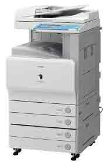
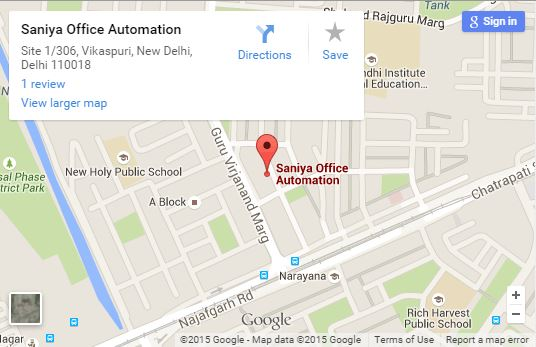
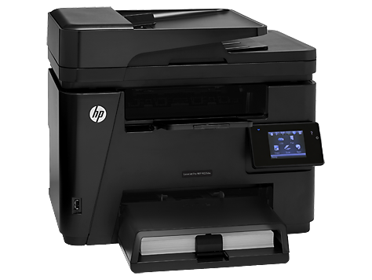

The Canon iR 4570 can print, scan, copy, fax, communicate electronically, finish documents, manage workflow, all with document security. It's a flexible, affordable device for medium office workgroups.
Learn More
The new imageRUNNER 2002N comes packed with essential features that rules today’s business efficiency. Do More Work Less by improving productivity with an array of features such as network connectivity, Remote Scan and Mobile Print which allows you to focus your time and energy on more important business. It is a space-saving A3 multifunctional with network printing as standard, which addresses your core output needs with black & white printing at 20ppm.
Learn More
Save time and help reduce paper costs, using reliable automatic two-sided printing and copying. Just start printing, quick and easy—with the simple control panel. Reduce employee time at the MFP—using the automatic document feeder. Put this MFP to work, right out of the box—full-capacity, 1500-page toner cartridge included.
Learn More